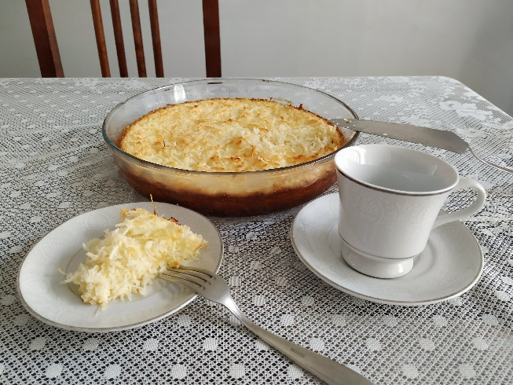
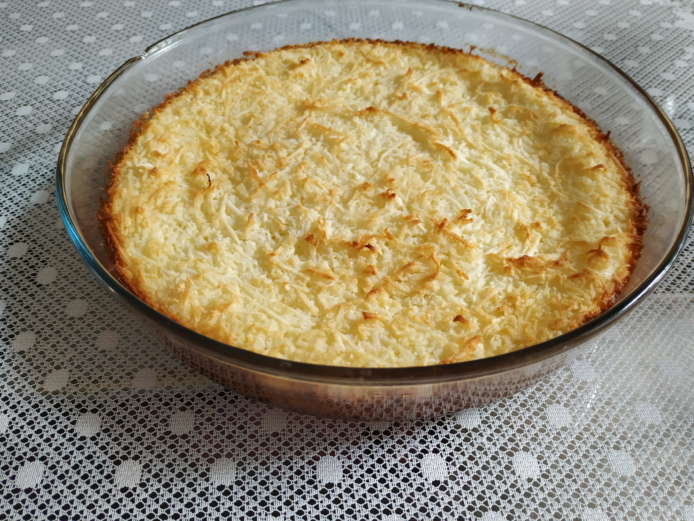
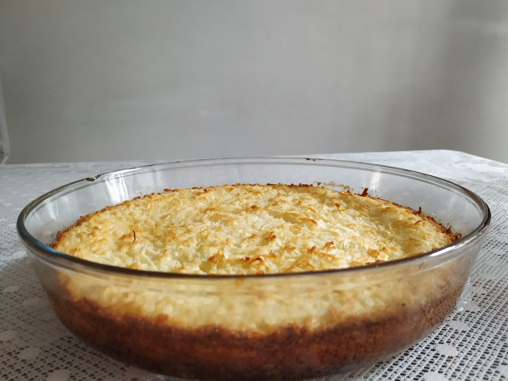
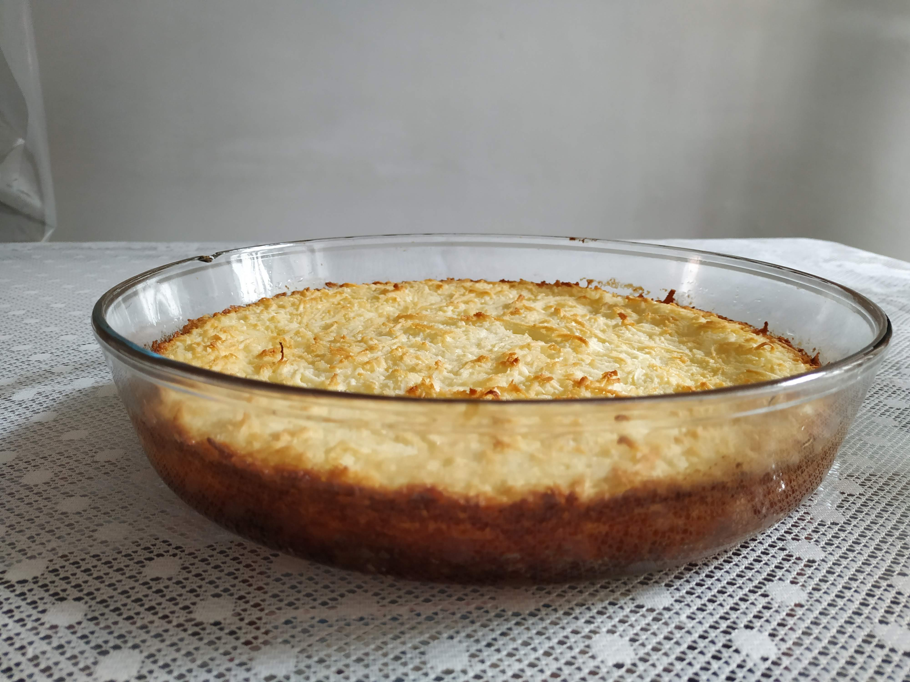
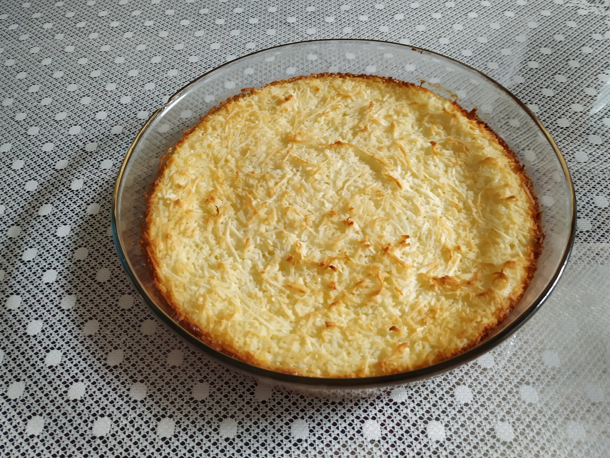
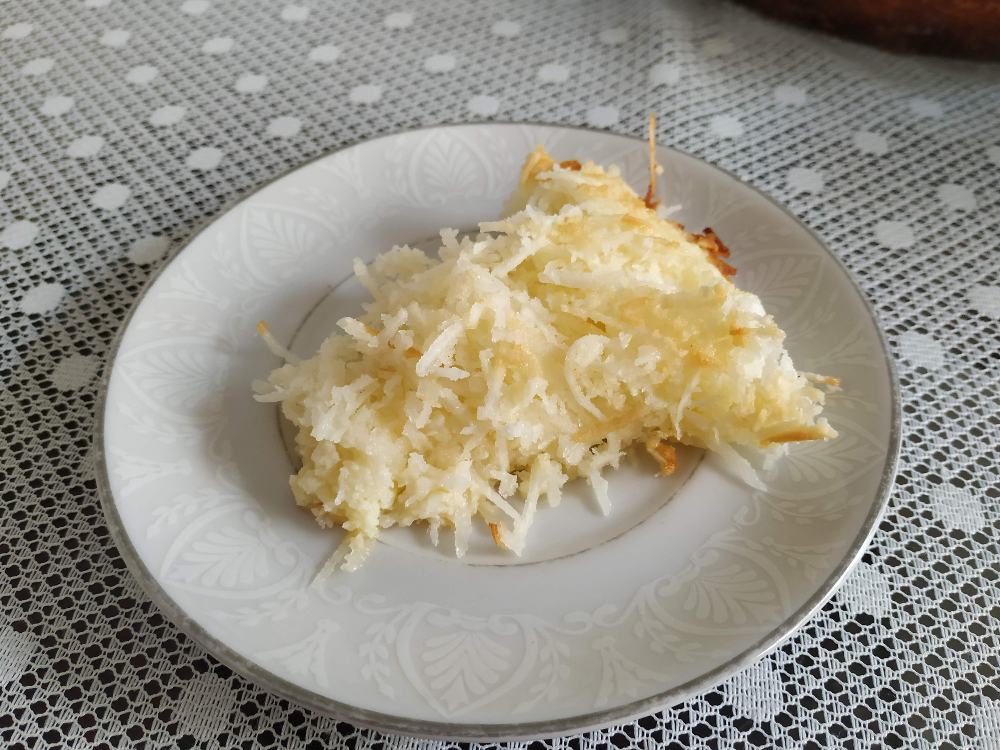
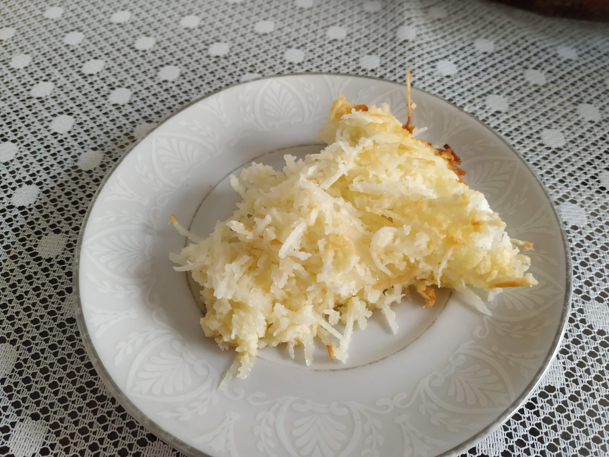
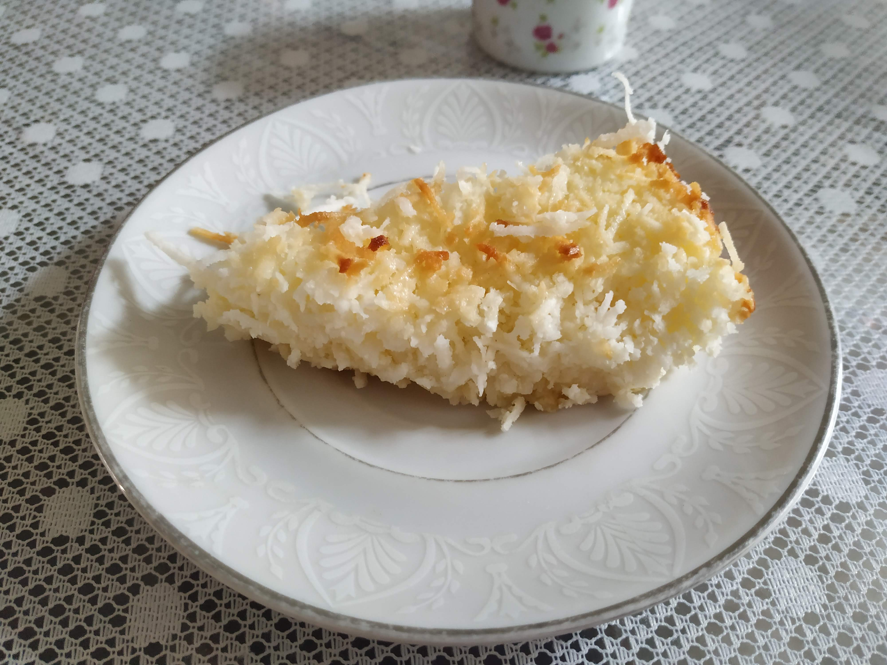

Cocada
Ingredientes
- 3 ovos
- 3 xíc. de açúcar
- 1 colher de manteiga
- 1 coco ralado (ou 500 g de coco já ralado)
- 1 vidro de leite de coco
Modo de Preparo
Numa tigela misturar tudo, colocar numa forma untada e levar ao forno por aproximadamente 20 a 30 minutos.
Obs.: se quiser, ao invés de colocar 3 xíc. de açúcar pode-se colocar ½ lata de leite condensado e 1 xíc de açúcar.







